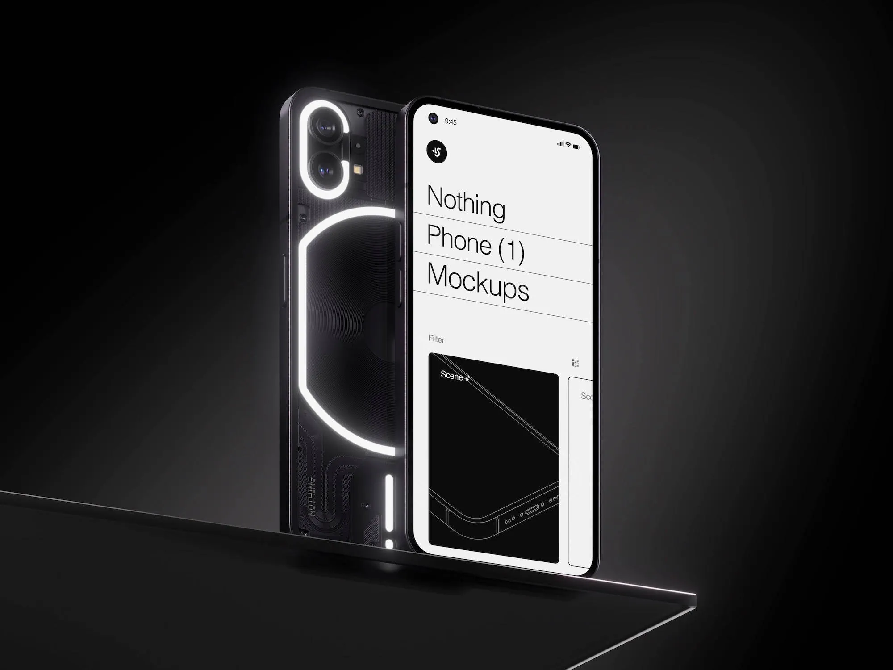

Hello, I'm Niloufar
– A digital designer from the vibrant city of Iran, where creativity knows no bounds. My passion lies in crafting digital experiences that captivate and inspire. With a keen eye for aesthetics and a love for cutting-edge technology, I immerse myself in the dynamic world of design.


*About me
From conceptualizing sleek user interfaces to breathing life into visually stunning websites, my journey as a digital designer is a fusion of artistry and innovation. I thrive on pushing boundaries and staying ahead of the curve, always on the lookout for the next big design trend or technological breakthrough.